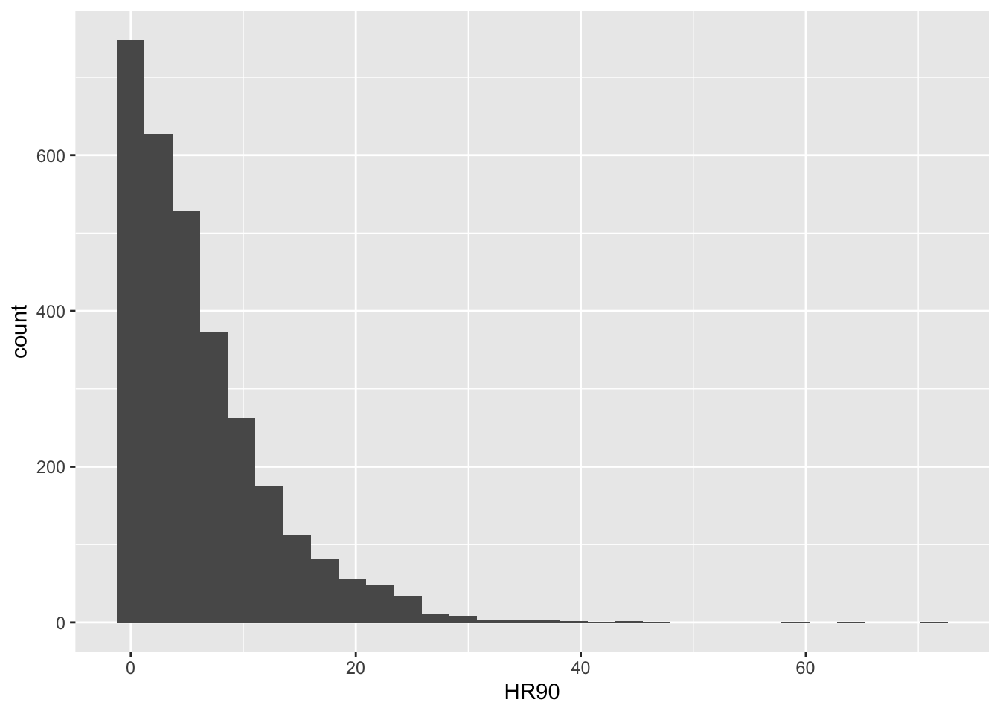

Chapter 7 Global and local spatial autocorrelation
This session we begin to explore the analysis of local spatial autocorrelation statistics. Spatial autocorrelation is the correlation among data values, strictly due to the relative location proximity of the objects that the data refer to. Remember in the earlier weeks when we spoke about Tobler’s first law of geography - “everything is related to everything else, but near things are more related than distant things”? Spatial autocorrelation is the measure of this correlation between near things. If correlation is not a familiar term, there is a recommended reading for you on canvas to refresh your memory under ‘preparatory material’ for this week.
We’ll be making use of the following packages:
dplyrjanitorsfspdeptmapreadxl
7.1 Get data
So, let’s start by getting some data. We are going to take some of the data from past weeks. In getting the data ready you will have one more opportunity to practice how to read data into R but also how to perform some basic spatial checks, transformations and operations. It may seem like you have already done some of this stuff. But that’s the point: to practice. The more you do this stuff, the easier it will be and eventually things will click and become second nature.
So let’s go. First let’s get the LSOA boundary data.
#The following assumes you have a subdirectory called BoundaryData in your data folder, if not then you will need to change to the pathfile where you store your LSOA shapefile
# import data
manchester_lsoa <- st_read("data/BoundaryData/england_lsoa_2021.shp")Now check the coordinate system.
## Coordinate Reference System:
## User input: OSGB36 / British National Grid
## wkt:
## PROJCRS["OSGB36 / British National Grid",
## BASEGEOGCRS["OSGB36",
## DATUM["Ordnance Survey of Great Britain 1936",
## ELLIPSOID["Airy 1830",6377563.396,299.3249646,
## LENGTHUNIT["metre",1]]],
## PRIMEM["Greenwich",0,
## ANGLEUNIT["degree",0.0174532925199433]],
## ID["EPSG",4277]],
## CONVERSION["British National Grid",
## METHOD["Transverse Mercator",
## ID["EPSG",9807]],
## PARAMETER["Latitude of natural origin",49,
## ANGLEUNIT["degree",0.0174532925199433],
## ID["EPSG",8801]],
## PARAMETER["Longitude of natural origin",-2,
## ANGLEUNIT["degree",0.0174532925199433],
## ID["EPSG",8802]],
## PARAMETER["Scale factor at natural origin",0.9996012717,
## SCALEUNIT["unity",1],
## ID["EPSG",8805]],
## PARAMETER["False easting",400000,
## LENGTHUNIT["metre",1],
## ID["EPSG",8806]],
## PARAMETER["False northing",-100000,
## LENGTHUNIT["metre",1],
## ID["EPSG",8807]]],
## CS[Cartesian,2],
## AXIS["(E)",east,
## ORDER[1],
## LENGTHUNIT["metre",1]],
## AXIS["(N)",north,
## ORDER[2],
## LENGTHUNIT["metre",1]],
## USAGE[
## SCOPE["Engineering survey, topographic mapping."],
## AREA["United Kingdom (UK) - offshore to boundary of UKCS within 49°45'N to 61°N and 9°W to 2°E; onshore Great Britain (England, Wales and Scotland). Isle of Man onshore."],
## BBOX[49.75,-9.01,61.01,2.01]],
## ID["EPSG",27700]]You can see we are in projected coordinates of British National Grid.
Now let’s add the burglary data from Greater Manchester. We have practiced this code in previous sessions so we won’t go over it on detail again, but try to remember and understand what each line of code rather than blindly cut and paste. If you don’t understand what each of these lines of codes is doing, raise your hand to call us over to help in the lab.
# step1" import excel file with read_xlsx()
crimes <- read_xlsx("data/gmp_crimes_2021.xlsx") %>% clean_names()
#step2: filter out to select burglary
burglary <- filter(crimes, crime_type == "Burglary")
#step3: transform into spatial object
burglary_spatial = st_as_sf(burglary, coords = c("longitude", "latitude"),
crs = 4326)
#step4: reproject to BNG
burglary_spatial <- st_transform(burglary_spatial, st_crs(27700))
#step5: select burglaries that intersect with the Manchester city LSOA map - i.e. they fall within Manchester borough.
bur_mc_intersects <- st_intersects(manchester_lsoa, burglary_spatial)
bur_mc <- burglary_spatial[unlist(bur_mc_intersects),]
#step6: check results
plot(st_geometry(bur_mc))
We now have the burglaries which took place in Manchester borough. Let’s now count how many burglaries there are within each LSOA. This is a point in polygon operation that we covered in week 4 when we counted the number of violent crimes in the buffers of the licensed premises for example. If the code or the notion does not make much sense to you make sure you review the relevant session from week 4, and ask us about this in the lab or for me to cover it again in the feedback session.
#step6: point in polygon spatial operation (be patient this can take time)
burglaries_per_lsoa <- bur_mc %>%
st_join(manchester_lsoa, ., left = FALSE) %>%
count(lsoa21cd)
#step7: let's rename the column with the count of burglaries (n) into something more meaningful
burglaries_per_lsoa <- rename(burglaries_per_lsoa, burglary = n)
# Now there are two LSOAs that have gone missing from the original file. This is because they had no burglaries
# Let's add them back with a value of 0 for the burglary variable
missing_lsoas <- manchester_lsoa %>%
filter(!lsoa21cd %in% burglaries_per_lsoa$lsoa21cd) %>%
dplyr::select(lsoa21cd) %>%
mutate(burglary = 0)
burglaries_per_lsoa <- rbind(burglaries_per_lsoa, missing_lsoas)
#step8: Plot with tmap
tm_shape(burglaries_per_lsoa) +
tm_fill("burglary",
fill.scale = tm_scale_intervals(style = "quantile", values = "brewer.reds"),
fill.legend = tm_legend(title = "Burglary counts",
position = c("right", "bottom"),
title.size = 0.8,
text.size = 0.6)) +
tm_borders(col_alpha = 0.1) 
Do you see any patterns? Are burglaries randomly spread around the map? Or would you say that areas that are closer to each other tend to be more alike? Is there evidence of clustering? Do burglaries seem to appear in certain pockets of the map?
In this session we are going to discuss ways in which you can quantify the answer to this question. We will discuss measures of global spatial autocorrelation, which essentially aim to answer the degree to which areas that are near each other tend to be more alike. We say global because we are interested in the degree of clustering not on the location of the clusters. Later we will also cover techniques to identify local clusters of autocorrelation, but for now we will focus in quantifying whether areas are (on average) alike their neighbours.
7.1.1 What is a neighbour?
Previously we asked whether areas are similar to their neighbours or to areas that are close. But what is a neighbour? Or what do we mean by close? How can one define a set of neighbours for each area? If we want to know if what we measure in a particular area is similar to what happens on its neighbouring areas, we first need to establish what we mean by a neighbour.
7.1.1.1 Contiguity-based neighbours
There are various ways of defining a neighbour. Most rely on topological or geometrical relationships among the areas. First, we can say that two areas are neighbours if they share boundaries, if they are next to each other. In this case we talk of neighbours by contiguity. Contiguous can, at the same time, mean all areas that share common boundaries (what we call contiguity using the rook criteria, like in chess) or areas that share common boundaries and common corners, that is, that have any point in common (and we call this contiguity using the queen criteria). When we use this criteria we can refine our definition by defining the intensity of neighbourliness “as a function of the length of the common border as a proportion of the total border” (Haining and Li 2020, 89). Given that in criminology we mostly work with irregular lattice data (such as police districts or census geographies), the queen criteria makes more sense. There is little theoretical justification for why, say, a police district would only exhibit dependence according to the rook criteria.
When defining neighbours by contiguity, we may also specify the order of contiguity. First order contiguity means that we are focusing on areas immediately contiguous (those in dark blue in the figure below). Second order means that we consider neighbours only those areas that are immediately contiguous to our first order neighbours (the light blue areas in the figure below) and you could go on and on. Look at the graphic below for clarification:

7.1.1.2 Distance-based neighbours
We may also define neighbours by geographical distance. You can consider neighbours those areas that distance-wise are close to each other (regardless of whether boundaries are shared). The distance metric often will be Euclidean, but other commonly used distance metrics could also be employed (for example, Manhattan). Often one takes the centroid of the polygon as the location to take the distance from. More sophisticated approaches may involve taking a population weighted centroid, where the location of the centroid depends on the distribution of the population within an area.
Other approaches to define neighbours are graph-based, attribute-based, or interaction-based (e.g., flow of goods or people between areas). Contiguity and distance are the two most commonly used methods, though.
7.2 Putting ‘neighbourness’ in our analysis - constructing a spatial weight matrix
You will come across the term spatial weight matrix at some point or, using mathematical notation, \(W\). Essentially the spatial weight matrix is a \(n\) by \(n\) matrix with ones and zeroes (in the case of contiguity-based definitions (v.s. distance-based)) identifying if any two observations are neighbours or not (1 or 0). You can think of the spatial weight matrix as a new data table that we are constructing with our definition of neighbours (whichever definition that is ).
How can we build such a matrix? To illustrate, let’s focus on Manchester’s City Centre. Calculating a spatial weights matrix is a computationally intensive process, which means it takes a long time (especially in older laptops…!). The larger area you have (which will have more LSOAs) the longer this will take.
7.2.1 Activity 1: Burglaries in Manchester City Centre ward
We will use familiar code to clip the spatial object with the counts of burglaries to only those that intersect with the City Centre ward. Again, we have covered this code elsewhere, so we won’t explain here in detail. But don’t just cut and paste, if there is anything in this code you don’t fully understand you are expected to ask us.
#Read a geojson file with Manchester wards piccadilly and deansgate joined together to create a city centre ward
# if you don't have this you can refer back to week 4 when we created it
# or if you're short on time you can download it from canvas
manchester_ward <- st_read("data/mcr_city_centre.geojson")## Reading layer `mcr_city_centre' from data source
## `/Users/user/Desktop/resquant/crime_mapping_textbook/data/mcr_city_centre.geojson'
## using driver `GeoJSON'
## Simple feature collection with 1 feature and 0 fields
## Geometry type: POLYGON
## Dimension: XY
## Bounding box: xmin: 382619.4 ymin: 397083 xmax: 385703.7 ymax: 399529.9
## Projected CRS: OSGB36 / British National Grid## [1] TRUE#Intersect
cc_intersects <- st_contains(manchester_ward, burglaries_per_lsoa)
cc_burglary <- burglaries_per_lsoa[unlist(cc_intersects),]
#Plot with tmap
tmap_mode("view")## ℹ tmap modes "plot" - "view"tm_shape(cc_burglary) +
tm_fill(
"burglary",
fill.scale = tm_scale_intervals(style = "quantile", values = "brewer.reds"),
id = "lsoa21cd"
) +
tm_borders() +
tm_title("Burglary counts", size = 0.7) +
tm_view(legend.position = c("right", "top"))So now we have a new spatial object cc_burglary with the 13 LSOA units that compose the City Centre Ward of Manchester. By focusing in a smaller subset of areas we can understand perhaps a bit better what comes next. But again we carry on. Do you perceive here some degree of spatial autocorrelation?
7.2.2 Activity 2: Manually explore neighbours
The id argument in the tm_fill ensures that when you click on any of the areas you get not only the count of burglaries in that LSOA (the quantity we are mapping) gets displayed within a bubble, but you also get to see the code that identifies that LSOA.
Move your cursor over the LSOA that is most west in Deansgate (covers the MOSI and castlefield bowl, if you know these) - it’s code is E01033681. You will see this area had 21 burglaries in 2019, if you click on it. Using the rook criteria identify the first order neighbors of this LSOA that we have included in our sample of LSOAs here. List their identifiers. Are things different if we use the queen criteria? If so, how does it change? Think and think hard about what the lecture by Luc Anselin discussed. Have you identified all the neighbours of this area? (there are multiple ways of answering this question, just make sure you reason your answer).
7.3 Creating a list of neighbours
It would be very, very tedious having to identify the neighbours of all the areas in our study area by hand, in the way we have done above in Activity 2. That’s why we love computers. We can automate tedious work so that they do it and we have more time to do fun stuff. We can use code to get the computer to establish what areas are next to each other (in this case we are using a contiguity based definition of being a neighbour).
7.3.1 Activity 3: Creating a neighbour list
In order to identify neighbours we will use the poly2nb() function from the spdep package that we loaded at the beginning of our session. The spdep package provides basic functions for building neighbour lists and spatial weights, tests for spatial autocorrelation for areal data like Moran’s I (more on this below), and functions for fitting spatial regression models.
This function builds a neighbours list based on regions with contiguous boundaries. If you look at the documentation you will see that you can pass a “queen” argument that takes TRUE or FALSE as options. If you do not specify this argument the default is set to TRUE. That is, if you don’t specify queen = FALSE this function will return a list of first order neighbours using the Queen criteria. If TRUE, a single shared boundary point meets the contiguity condition.
## [1] "nb"This has created an object of class nb - which is a neighbour list object. We can get some idea of what’s there if we ask for a summary.
## Neighbour list object:
## Number of regions: 13
## Number of nonzero links: 52
## Percentage nonzero weights: 30.76923
## Average number of links: 4
## Link number distribution:
##
## 2 3 4 5 6
## 3 2 3 2 3
## 3 least connected regions:
## 234 241 257 with 2 links
## 3 most connected regions:
## 233 237 253 with 6 linksThis is basically telling us that using this criteria each LSOA polygon has an average of 4.3 neighbours (when we just focus on the city centre) and that all areas have some neighbours (there is no islands). The link number distribution gives you the number of links (neighbours) per area. So here we have 3 polygons with 2 neighbours, 3 with 3, 7 with 4, and so on. The summary function here also identifies the areas sitting at both extreme of the distribution.
For more details we can look at the structure of w.
## List of 13
## $ : int [1:4] 2 3 4 6
## $ : int [1:6] 1 3 5 6 8 9
## $ : int [1:2] 1 2
## $ : int [1:5] 1 6 9 12 13
## $ : int [1:6] 2 7 8 9 10 11
## $ : int [1:4] 1 2 4 9
## $ : int [1:2] 5 8
## $ : int [1:3] 2 5 7
## $ : int [1:6] 2 4 5 6 11 12
## $ : int [1:2] 5 11
## $ : int [1:5] 5 9 10 12 13
## $ : int [1:4] 4 9 11 13
## $ : int [1:3] 4 11 12
## - attr(*, "class")= chr "nb"
## - attr(*, "region.id")= chr [1:13] "59" "233" "234" "236" ...
## - attr(*, "call")= language poly2nb(pl = cc_burglary, row.names = cc_burglary$code)
## - attr(*, "type")= chr "queen"
## - attr(*, "snap")= num 0.01
## - attr(*, "sym")= logi TRUE
## - attr(*, "ncomp")=List of 2
## ..$ nc : int 1
## ..$ comp.id: int [1:13] 1 1 1 1 1 1 1 1 1 1 ...We can graphically represent the links using the following code:
#We first plot the boundaries
plot(st_geometry(cc_burglary), col='gray', border='blue', lwd=2)
#Then we use the st_centroid and st_coordinates functions to obtain the coordinates of the polygon centroids
xy <- st_coordinates(st_centroid(cc_burglary))## Warning: st_centroid assumes attributes are constant over geometries7.4 Generating the weight matrix
From this neighbourhood list we can specify our weight matrix.
7.4.1 Activity 4: Building a spatial weights matrix
We can transform our neighbourhood list object w into a spatial weights matrix. A spatial weights matrix reflects the intensity of the geographic relationship between observations. For this we use the spdep function nb2mat().
## 59 233 234 236 237 240 241 243 253 257 258 287 288
## 59 0 1 1 1 0 1 0 0 0 0 0 0 0
## 233 1 0 1 0 1 1 0 1 1 0 0 0 0
## 234 1 1 0 0 0 0 0 0 0 0 0 0 0
## 236 1 0 0 0 0 1 0 0 1 0 0 1 1
## 237 0 1 0 0 0 0 1 1 1 1 1 0 0
## 240 1 1 0 1 0 0 0 0 1 0 0 0 0
## 241 0 0 0 0 1 0 0 1 0 0 0 0 0
## 243 0 1 0 0 1 0 1 0 0 0 0 0 0
## 253 0 1 0 1 1 1 0 0 0 0 1 1 0
## 257 0 0 0 0 1 0 0 0 0 0 1 0 0
## 258 0 0 0 0 1 0 0 0 1 1 0 1 1
## 287 0 0 0 1 0 0 0 0 1 0 1 0 1
## 288 0 0 0 1 0 0 0 0 0 0 1 1 0
## attr(,"call")
## nb2mat(neighbours = w, style = "B")Starting from our neighbours list (w), in which regions are either listed as neighbours or are absent (thus not in the set of neighbours for some definition), the function creates an \(n\) by \(n\) weights matrix (where \(n\) is the number of neighbourhoods here) with values given by the coding scheme style chosen (specified with the style= parameter in the nb2mat() function. Here we specify this value as B which results in basic binary coding. That means that this matrix has values of 0 or 1 indicating whether the elements listed in the rows are adjacent (using our definition, which in this case was the Queen criteria) with each other.
The diagonal is full of zeroes. This is because we exclude “self-influence” and specify that an area cannot be a neighbour of itself (formally \(w_{ii} = 0\) for all \(i = 1,...,n\)). Then, for each other cell, the matrix contains the “spatial influence” of unit \(j\) on unit \(i\).
For example, the first column there is the first LSOA in our neighbour list object (w). Look back to when we printed the list of neighbours with the str(w) function, just above. You can see, for the first like the output was: $ : int [1:4] 2 6 11 22. So we see, this first LSOA has 4 neighbours, and these are the 2nd, 6th, 11th, and 22nd LSOAs. Sure enough, if you look across this first row in our weights matrix (wm), you will see that every value is a 0 except for four 1s, one at the 2nd column, one in the 6th, one in the 11th, and one in the 22nd. Here the 1 is telling us that yes, this is a neighbour (while 0s tell us no, these are not neighbours), as we used the binary coding scheme (style = 'B').
When our spatial weights matrix looks like this, it is symmetrical. That is the influence of one neighbour on the other is the same as it’s influence on that neighbourhood - if they neighbour, their influence is 1, if they do not, it is 0.
7.4.2 Activity 5: Row standardised spatial weights matrix
So with binary coding scheme, we get a spatial influence of 1 if the LSOA is a neighbour, and 0 if it is not a neighbour. But we can also get more informative than that.
In many computations we will see that the matrix is row standardised. We can obtain a row standardised matrix by changing the style= parameter to style='W':
## 59 233 234 236 237 240 241
## 59 0.0000000 0.2500000 0.2500000 0.2500000 0.0000000 0.2500000 0.0000000
## 233 0.1666667 0.0000000 0.1666667 0.0000000 0.1666667 0.1666667 0.0000000
## 234 0.5000000 0.5000000 0.0000000 0.0000000 0.0000000 0.0000000 0.0000000
## 236 0.2000000 0.0000000 0.0000000 0.0000000 0.0000000 0.2000000 0.0000000
## 237 0.0000000 0.1666667 0.0000000 0.0000000 0.0000000 0.0000000 0.1666667
## 240 0.2500000 0.2500000 0.0000000 0.2500000 0.0000000 0.0000000 0.0000000
## 241 0.0000000 0.0000000 0.0000000 0.0000000 0.5000000 0.0000000 0.0000000
## 243 0.0000000 0.3333333 0.0000000 0.0000000 0.3333333 0.0000000 0.3333333
## 253 0.0000000 0.1666667 0.0000000 0.1666667 0.1666667 0.1666667 0.0000000
## 257 0.0000000 0.0000000 0.0000000 0.0000000 0.5000000 0.0000000 0.0000000
## 258 0.0000000 0.0000000 0.0000000 0.0000000 0.2000000 0.0000000 0.0000000
## 287 0.0000000 0.0000000 0.0000000 0.2500000 0.0000000 0.0000000 0.0000000
## 288 0.0000000 0.0000000 0.0000000 0.3333333 0.0000000 0.0000000 0.0000000
## 243 253 257 258 287 288
## 59 0.0000000 0.0000000 0.0000000 0.0000000 0.0000000 0.00
## 233 0.1666667 0.1666667 0.0000000 0.0000000 0.0000000 0.00
## 234 0.0000000 0.0000000 0.0000000 0.0000000 0.0000000 0.00
## 236 0.0000000 0.2000000 0.0000000 0.0000000 0.2000000 0.20
## 237 0.1666667 0.1666667 0.1666667 0.1666667 0.0000000 0.00
## 240 0.0000000 0.2500000 0.0000000 0.0000000 0.0000000 0.00
## 241 0.5000000 0.0000000 0.0000000 0.0000000 0.0000000 0.00
## 243 0.0000000 0.0000000 0.0000000 0.0000000 0.0000000 0.00
## 253 0.0000000 0.0000000 0.0000000 0.1666667 0.1666667 0.00
## 257 0.0000000 0.0000000 0.0000000 0.5000000 0.0000000 0.00
## 258 0.0000000 0.2000000 0.2000000 0.0000000 0.2000000 0.20
## 287 0.0000000 0.2500000 0.0000000 0.2500000 0.0000000 0.25
## 288 0.0000000 0.0000000 0.0000000 0.3333333 0.3333333 0.00
## attr(,"call")
## nb2mat(neighbours = w, style = "W")Row standardisation of a matrix ensure that the sum of the values across each row add up to 1. So, for example, if you have four neighbours and that has to add up to 4, you need to divide 1 by 4, which gives you 0.25. So if we look back at our first row there, you can see in the 2nd, 6th, 11th, and 22nd column now a 0.25 instead of the 1 with the binary coding, representing the spatial influence for each of the neighbours.
Row standardisation ensures that all weights are between 0 and 1. This facilities the interpretation of operation with the weights matrix as an averaging of neighboring values, and allows for the spatial parameter used in our analyses to be comparable between models.
In this case our spatial weights matrix is not symmetrical. The spatial influence of one neighbourhood on the other depends on how many other neighbours it has. So for example, while the influence on LSOA 1 from LSOA 2 is 0.25 (since LSOA 1 has 4 neighbours), the influence of LSOA 1 on LSOA 2 is only 0.20, since LSOA 2 has 5 neighbours.
7.4.3 Activity 6: Spatial weights list
Besides a spatial weights matrix, we can also have a spatial weights list.
Before we can use the functions from spdep to compute the global Moran’s I we need to create a listw type spatial weights object (instead of the matrix we used above). To get the same value as above in the wm object, we use style='B' to use binary (TRUE/FALSE) distance weights.
## Characteristics of weights list object:
## Neighbour list object:
## Number of regions: 13
## Number of nonzero links: 52
## Percentage nonzero weights: 30.76923
## Average number of links: 4
##
## Weights style: B
## Weights constants summary:
## n nn S0 S1 S2
## B 13 169 52 104 9447.5 Moran’s I
The most well known measure of spatial autocorrelation is the Moran’s I. It was developed by Patrick Alfred Pierce Moran, an Australian statistician. You can find the formula and some explanation in the wikipedia article. The video lecture by Luc Anselin covers an explanation of Moran’s I. We strongly recommend you watch the video. You can also find helpful this link if things are still unclear. The formula you see may look intimidating but it is nothing but the formula for standard correlation expanded to incorporate the spatial weight matrix.
\[I = \frac{n}{\sum_i \sum_j w_{ij}} \frac{\sum_i \sum_j w_{ij} (x_i - \bar{x})(x_j - \bar{x})}{\sum_i(x_i - \bar{x})^2}\]
To compute this in R, we can use the moran() function. Have a look at ?moran to see a description of this in R. (Note: S0 refers to the sum of the weights, which is the same as \(\sum_i \sum_j w_{ij}\))
7.5.1 Activity 7: Calculate Moran’s I
As the function is defined as moran(y, listw, n, S0), we will need to add the arguments of x - our variable of interest, listw - our weights list, n - the number of observations, and S0 - the sum of the weights (note that when we have row standardised weights then S0 is the same as n, so actually that part can be ignored from the equation, but we still must supply this information). In order to supply this S0 we can use the Szero() function (in the spdep package) and pass to it our weights object (ww). You might think it odd to supply these parameters as they can be derived from our ww object which has that information. Anyway, we supply them and it works. There probably are cases where it makes sense to use other values.
cc_moran_i <- moran(cc_burglary$burglary, listw = ww, n=length(ww$neighbours), S0=Szero(ww))
cc_moran_i## $I
## [1] 0.05277692
##
## $K
## [1] 5.107427I is the Moran’s I value, while K gives the sample kurtosis.
So the Moran’s I here is 0.0527769, which is not very large. The Index is usually bounded by -1 and 1 (the exact bounds depend on the weights matrix used - when the matrix is row-standardised it will always be between -1 and 1), so 0.0527769 is not large, but it is still above zero, so we might want to explore whether this is significant using a test of statistical significance for this statistic.
The Spatial Autocorrelation (Global Moran’s I) tool is an inferential statistic, which means that the results of the analysis are always interpreted within the context of its null hypothesis. For the Global Moran’s I statistic, the null hypothesis states that the attribute being analysed is randomly distributed among the features in your study area; said another way, the spatial processes promoting the observed pattern of values is random chance. Imagine that you could pick up the values for the attribute you are analysing and throw them down onto your features, letting each value fall where it may. This process (picking up and throwing down the values) is an example of a random chance spatial process. When the p-value returned by this tool is statistically significant, you can reject the null hypothesis.
In some software you can use statistical tests invoking asymptotic theory, but like Luc Anselin mentions in his videos, the most appropriate way of doing these tests is by using a computational approach, such as a Monte Carlo procedure. The way Monte Carlo works is that the values of burglary are randomly assigned to the polygons, and the Moran’s I is computed. This is repeated several times to establish a distribution of expected values under the null hypothesis. The observed value of Moran’s I is then compared with the simulated distribution to see how likely it is that the observed values could be considered a random draw.
If confused, watch this quick video on monte carlo simulations.
We use the function moran.mc() to run a permutation test for Moran’s I statistic calculated by using some number of random permutations of our numeric vector, for the given spatial weighting scheme, to establish the rank of the observed statistic in relation to the simulated values.
We need to specify our variable of interest (burglary), the listw object we created earlier (ww), and the number of permutations we want to run (here we choose 99).
set.seed(1234) # The seed number you choose is the starting point used in the generation of a sequence of random numbers, which is why (provided you use the same pseudo-random number generator) you'll obtain the same results given the same seed number.
burg_moranmc_results <- moran.mc(cc_burglary$burglary, ww, nsim=99)
burg_moranmc_results##
## Monte-Carlo simulation of Moran I
##
## data: cc_burglary$burglary
## weights: ww
## number of simulations + 1: 100
##
## statistic = 0.052777, observed rank = 90, p-value = 0.1
## alternative hypothesis: greaterSo, the probability of observing this Moran’s I if the null hypothesis was true is 0.1. This is higher than our alpha level of 0.05. In this case, we can not reject our null hypothesis of spatial randomness, and must conclude that there isn’t a significant global spatial autocorrelation in our data. One thing to note though is that we have a very small sample size (and are looking over a small geographical area) so this might be something to take into account when you write up such finsings.
7.5.2 Activity 8: Moran scatter plot
We can make a “Moran scatter plot” to visualize spatial autocorrelation. Note the row standardisation of the weights matrix.
rwm <- mat2listw(wm, style='W')
# Checking if rows add up to 1 (they should)
mat <- listw2mat(rwm)
#This code is simply adding each row to see if we get one when we add their values up, we are only displaying the first 15 rows in the matrix
apply(mat, 1, sum)## 59 233 234 236 237 240 241 243 253 257 258 287 288
## 1 1 1 1 1 1 1 1 1 1 1 1 1Now we can plot:

The X axis represents the values of our burglary variable in each unit (each LSOA) and the Y axis represents a spatial lag of this variable. A spatial lag in this context is simply the weighted average value of the burglary count in the areas that are considered neighbours of each LSOA.
So we are plotting the value of burglary against the weighted average value of burglary in the neighbours. And you can see the correlation is almost flat here. As with any correlation measure, you could get positive spatial autocorrelation, that would mean that as you move further to the right in the X axis you have higher levels of burglary in the surrounding area. This is what we see here. But the correlation is fairly low and as we saw is not statistically significant. You can also obtain negative spatial autocorrelation. That is, that would mean that areas with high level of crime tend (it’s all about the global average effect!) to be surrounded by areas with low levels of crime. This is clearly not what we see here.
It is very important to understand that global statistics like the spatial autocorrelation (Global Moran’s I, Geary’s C) tool assess the overall pattern and trend of your data. They are most effective when the spatial pattern is consistent across the study area. In other words, you may have clusters (local pockets of autocorrelation), without having clustering (global autocorrelation). This may happen if the signs of the clusters negate each other. In general, Moran’s I is a better measure of global correlation, as Geary’s C is more sensitive to local correlations.
7.5.3 A note: the rgeoda and sfweight packages
Traditionally, the generation of a weight matrix was done with functions included in the spdep program, and this is what we had introduced above. We do want to note, however, that more recently the functionality of GeoDa, a very well-known point and click interface for spatial statistics originally developed by Luc Anselin (a key figure in the field of spatial statistics), has been brought to R via the rgeoda package. This package is fast, though “less flexible when modifications or enhancements are desired” (Pebesma and Bivand 2021). The nomenclature of the functions is slightly more intuitive, and there are subtle variations in some of the formulas. It works with sf objects, and so may be useful for integrating our analysis to these objects. It is enough now that you are aware of the content of this chapter, and one path to implementing what we learned with the sp package. This should equip you to be able to explore these other packages as well, which will have different ways of achieving these outcomes.
For example, to create queen contiguity weights, you can use the queen_weights() function from the rgeoda package, and as an argument you only need to pass the name of your polygon object (cc_burglary).
## Loading required package: digest##
## Attaching package: 'rgeoda'## The following object is masked from 'package:spdep':
##
## skater## name value
## 1 number of observations: 13
## 2 is symmetric: TRUE
## 3 sparsity: 0.307692307692308
## 4 # min neighbors: 2
## 5 # max neighbors: 6
## 6 # mean neighbors: 4
## 7 # median neighbors: 4
## 8 has isolates: FALSE7.6 Local spatial autocorrelation
So now we know about global measures of spatial association, in particular the Moran’s I statistic, which provide a mechanism to make inferences about a population from a sample. While this is useful for us to be able to assess quantitatively whether crime events cluster in a non-random manner, in the words of Jerry Ratcliffe “this simply explains what most criminal justice students learn in their earliest classes.” For example, consider the study of robberies in Philadelphia:

Aggregated to the police districts, this returns a global Moran’s I value (range 0 to 1) of 0.56, which suggests that there is clustering of robbery within police sectors. (Ratcliffe, Jerry. “Crime mapping: spatial and temporal challenges.” Handbook of quantitative criminology. Springer, New York, NY, 2010. 5-24.). While this should hardly be surprising given the above map, we as humans are likely to see patterns even if there aren’t any, and that is why these tests are helpful to verify (or disspell) our assumptions.
But, as already mentioned, is very important to understand that global statistics like the spatial autocorrelation (Global Moran’s I) tool assess the overall pattern and trend of your data. Don’t just take our word for how important this is, or how it’s commonly applied in criminological research. Instead, now that you’ve gone through on how to do this, and have begun to get a sense of understanding, read the following paper on https://link.springer.com/article/10.1023/A:1007592124641 where the authors make use of Moran’s I to explain spatial characteristics of homicide. You will likely see this in other papers as well, and now you will know what it means and why it’s important.
So again: the global autocorrelation statistic only tells us about overall pattern, whether there is any clustering. It does not tell us about where this clustering is, or what it looks like (hotspots? cold spots? outliers?).
In this section we will learn about local indicators of spatial association (LISA) and show how they allow for the decomposition of global indicators, such as Moran’s I, into the contribution of each observation. The LISA statistics serve two purposes. On one hand, they may be interpreted as indicators of local pockets of nonstationarity, or hot spots. On the other hand, they may be used to assess the influence of individual locations on the magnitude of the global statistic and to identify “outliers” (Anselin, Luc. “Local indicators of spatial association—LISA.” Geographical analysis 27.2 (1995): 93-115.).
7.6.1 Activity 9: Get data and weights for all Manchester
To explore local indicators of spatial correlation, let’s go back to using all of Manchester, rather than just the City Centre ward. We want to have enough data to see local variation, and while the code may take slightly longer to run, we can have a go at more meaningful stats.
So this is our burglaries_per_lsoa object that we’re referring back to. To check what our data look like, we can always plot again with tmap:
## ℹ tmap modes "plot" - "view"tm_shape(burglaries_per_lsoa) +
tm_fill("burglary",
fill.scale = tm_scale_intervals(style = "quantile", values = "brewer.reds"),
fill.legend = tm_legend(title = "Burglary counts",
position = c("right", "bottom"),
title.size = 0.8,
text.size = 0.6)) +
tm_borders(col_alpha = 0.1) 
Looks good! Now that we have the data we can generate the weight matrix. Again, what we do here is stuff we did above for the global correlation.
7.6.2 Activity 10: Exploring a Local Indicator of Spatial Association: Local Moran’s I.
There is also a local version of Moran’s I, which allows for the decomposition of global indicators of spatial autocorrelation such as Moran’s I discussed in Chapter 9, into the contribution of each observation. This allows us to elaborate on the location and nature of the clustering within our study area, once we have found that autocorrelation occurs globally.
Let’s first look at Moran’s scatterplot for our data. Remember from last chapter that Moran’s scatterplot plots the values of the variable of interest, in this case the burglary count on each micro-grid, against the spatial lagged value. For creating Moran’s scatterplot we generally use row standardisation in the weight matrix so that the y and the x-axes are more comparable.
Notice how the plot is split into four quadrants structured around the centered mean for the value of burglary and its spatial lag. The top right corner belongs to areas that have high level of burglary and are surrounded by other areas that have above the average level of burglary. These are high-high locations. The bottom left corner belongs to the low-low areas. These are areas with low level of burglary and surrounded by areas with below average levels of burglary. Both the high-high and low-low represent clusters. A high-high cluster is what you may refer to as a hot spot. And the low-low clusters represent cold spots.
In the opposite diagonal we have spatial outliers. They are not outliers in the standard statistical sense, as in extreme observations. Instead, they are outliers in that they are surrounded by areas that are very unlike them. So you could have high-low spatial outliers, areas with high levels of burglary and low levels of surrounding burglary, or low-high spatial outliers, areas that have themselves low levels of burglary (or whatever else we are mapping) and that are surrounded by areas with above average levels of burglary. This would suggest pockets of non-stationarity. Anselin (1996) warns these can sometimes surface as a consequence of problems with the specification of the weight matrix.
The slope of the line in the scatterplot gives you a measure of the global spatial autocorrelation.
You can also see here that the positive spatial autocorrelation is more noticeable when we focus on the whole of Manchester city, unlike what we observed when only looked at the city centre. You can check this running the global Moran’s I.
mcr_wide_moran_i <- moran(burglaries_per_lsoa$burglary, ww, n=length(ww$neighbours), S0=Szero(ww))
mcr_wide_moran_i## $I
## [1] 0.3549558
##
## $K
## [1] 29.3079You can see that the global Moran’s I statistic is 0.3549558. We cangenerate a pseudo p-value with our computational Monte Carlo method.
##
## Monte-Carlo simulation of Moran I
##
## data: burglaries_per_lsoa$burglary
## weights: ww
## number of simulations + 1: 1e+05
##
## statistic = 0.35496, observed rank = 1e+05, p-value = 1e-05
## alternative hypothesis: greaterThis is highly significant (much smaller than 0.05 cutoff). There is indeed global spatial autocorrelation, when we look at all of Manchester (not just city centre). Knowing this we can try to decompose this, figure out what is driving this global measure.
So that’s the global Moran’s I. As we noted earlier, the local Moran’s I helps you to identify the locations that weigh more heavily in the computation of the global Moran’s I. The object generated by the moran.plot() function includes a measure of this leverage, a hat value, for each location in your study area and we can plot these values if we want to geographically visualise those locations:
# We save the plot info into an object
m_plot_burglary <- moran.plot(burglaries_per_lsoa$burglary, ww, plot=FALSE)
# We extract the influence measure and place it
burglaries_per_lsoa$lm_hat <- m_plot_burglary$hat
# Then we can plot this measure of influence
tm_shape(burglaries_per_lsoa) + tm_fill("lm_hat")
To compute the local Moran’s I, we can use the localmoran() function from the spdep package.
Note: it is necessary to adjust for multiple comparisons. The unadjusted p-value for the test is stored in the fifth column of the object of class localmoran that we generated with the localmoran() function. As before we can extract this element and pass it as an argument to the p.adjust() function in order to obtain p-values with some method of adjustment for the problem of multiple comparisons.
## [1] 39NOTE: It is important to note that by default, the localmoran() function does not adjust for the problem of multiple comparisons. This needs to be kept in mind, as it might lead us to erroneously conclude we have many hot or cold spots.
In our example, if we do not adjust for multiple comparisons, then, there would be 39 areas with a significant p value. Let’s adjust using Bonferroni correction, which is quite conservative. It works by multiplying the p-values by the number of comparisons. See the help file for p.adjust() to see other options available.
## [1] 18If we apply again the Bonferroni correction, these get reduced to only 18.
Another approach is to use conditional permutation for inference purposes, instead of the analytical methods used above. In this case we would need to invoke the localmoran_perm() function also from the spdep package. This approach is based on simulations, so we also have to specify an additional argument nsim setting the number of simulations. Bivand and Wong (2018) suggest that “increasing the number of draws beyond 999 has no effect” (p. 741). The iseed argument ensures we use the same random seed and get reproducible results. As before adjusting for multiple comparisons notably reduces the number of significant clusters.
locm_burglary_perm <- localmoran_perm(burglaries_per_lsoa$burglary,
ww,
nsim=499,
alternative="two.sided",
iseed=1)
p_values_lmp <- locm_burglary_perm[,5]
sum(p_values_lmp < 0.05)## [1] 40## [1] 17We go from 40 to 17 significant regions! This really illustrates the perils of not correcting for multiple comparisons!
7.6.3 Creating a LISA map
In order to map these Local Indicators of Spatial Association (LISA), we need to do some prep work.
First we must scale the variable of interest. As noted earlier, when we scale burglary, what we are doing is re-scaling the values so that the mean is zero. We use the scale() function, which is a generic function whose default method centers and/or scales the variable. We have already done this above, so we have the variable s_burglary. We also want now to add a column of bonferroni adjusted p-values. Let’s call this localmp_bonf.
# Scale the count of burglary
burglaries_per_lsoa$s_burglary <- scale(burglaries_per_lsoa$burglary)
# Creates p values for Bonferroni adjustment
burglaries_per_lsoa$localmp_bonf <- p.adjust(p_values_lmp, "bonferroni")To produce the LISA maps, we also need to generate a spatial lag: the average value of the burglary count in the areas that are considered neighbours of each LSOA.
So what do we mean by this spatial dependence? When a value observed in one location depends on the values observed at neighbouring locations, there is a spatial dependence. And spatial data may show spatial dependence in the variables and error terms.
Why should spatial dependence occur? There are two reasons commonly given. First, data collection of observations associated with spatial units may reflect measurement error. This happens when the boundaries for which information is collected do not accurately reflect the nature of the underlying process generating the sample data. A second reason for spatial dependence is that the spatial dimension of a social or economic characteristic may be an important aspect of the phenomenon. For example, based on the premise that location and distance are important forces at work, regional science theory relies on notions of spatial interaction and diffusion effects, hierarchies of place and spatial spillovers.
There are two types of dependence, spatial error and spatial lag. Here we focus on spatial lag.
Spatial lag is when the dependent variable y in place i is affected by the independent variables in both place i and j.

This will be important to keep in mind when considering spatial regression. With spatial lag in ordinary least square regression, the assumption of uncorrelated error terms is violated, because near things will have associated error terms. Similarly, the assumption of independent observations is also violated, as the observations are influenced by the other observations near them. As a result, the estimates are biased and inefficient. Spatial lag is suggestive of a possible diffusion process – events in one place predict an increased likelihood of similar events in neighboring places.
So to be able to account for the spatial lag in our model, we must create a variable to account for this. For this we need our listw object, which is the object created earlier, when we generated the list with weights using row standardisation. We then pass this listw object into the lag.listw() function, which computes the spatial lag of a numeric vector using a listw sparse representation of a spatial weights matrix.
#create a spatial lag variable and save it to a new column
burglaries_per_lsoa$lag_s_burglary <- lag.listw(ww, burglaries_per_lsoa$s_burglary)Make sure to check the summaries to ensure the numbers are in line with our expectations, and nothing weird is going on. Some examples of things to check for are : are there any NA values? Are the ranges of values similar to what we would expect?
We are now going to create a new variable to identify the quadrant in which each observation falls within Moran’s scatterplot, so that we can tell apart the high-high, low-low, high-low, and low-high areas. We will only identify those that are significant according to the p-value that was provided by the local Moran function adjusted for multiple comparisons with out Bonferroni adjustment. The data we need for each observation, in order to identify whether it belongs to the high-high, low-low, high-low, or low-high quadrants are the standardised burglary score (positive or negative), the spatial lag score, and the p-value.
Essentially all we’ll be doing is assigning a variable values based on where in the plot it is. So for example, if it’s in the upper right, it is high-high and has values larger than 0 for both the burglary and the spatial lag values. It it’s in the upper left, it’s low-high and has a value larger than 0 for the spatial lag value, but lower than 0 on the burglary value. And so on, and so on. Here’s an image to illustrate:

So let’s first initialise this variable. In this instance we are creating a new column our object and calling it “quad_sig”. We are using the mutate() function to create this new variable. Inside that, we use case_when() function to assign the values based on the conditions we set. These conditions check whether the adjusted p-value is significant or not and if it is, then which quadrant the specific LSOA falls within (i.e. if the lagged X and the standardised X are smaller or greater than 0). This helps us decide whether it is a high-high, high-low, low-high, or low-low area.
burglaries_per_lsoa<- burglaries_per_lsoa %>%
mutate(quad_sig = case_when(localmp_bonf >= 0.05 ~ "Not significant",
s_burglary[,1] > 0 &
lag_s_burglary[,1] > 0 &
localmp_bonf < 0.05 ~ "High-high",
s_burglary[,1] < 0 &
lag_s_burglary[,1] < 0 &
localmp_bonf < 0.05 ~ "Low-low",
s_burglary[,1] < 0 &
lag_s_burglary[,1] > 0 &
localmp_bonf < 0.05 ~ "Low-high",
s_burglary[,1] > 0 &
lag_s_burglary[,1] < 0 &
localmp_bonf < 0.05 ~ "High-low" ))Now we can have a look at what this returns:
##
## High-high Low-high Not significant
## 13 4 278So the 17 significant clusters we found split into 13 high-high and 4 low-high.
Let’s put them on a map, using the standard colours used in this kind of maps:
tm_shape(burglaries_per_lsoa) +
tm_fill("quad_sig",
alpha=0.5) +
tm_borders(alpha=.5) +
tm_layout(frame = FALSE,
legend.position = c("right", "bottom"),
legend.title.size = 0.8,
legend.text.size = 0.5,
main.title = "LISA with the p-values",
main.title.position = "centre",
main.title.size = 1.2)
There we have it, our LISA map of a grid overlay over Manchester borough, identifying local spatial autocorrelation in burglaries.
Very nice!
So how do we interpret these results? Well keep in mind:
- The LISA value for each location is determined from its individual contribution to the global Moran’s I calculation.
- Whether or not this value is statistically significant is assessed by comparing the actual value to the value calculated for the same location by randomly reassigning the data among all the areal units and recalculating the values each time (the Monte Carlo simulation approach discussed earlier).
So essentially this map now tells us that there was statistically significant clustering in burglaries in Manchester. When reporting your results, report at least the Moran’s I test value and the p value. So, for this test, you should report Moran’s I = 0.3549558, p < .001. Including the LISA cluster map is also a great way of showing how the attribute is actually clustering.
7.7 Summary
This week we learned how to move from seeing apparent crime patterns on a map to testing whether they are more clustered than we would expect by chance. We practised defining “neighbours” using contiguity (rook vs queen), and turning those neighbour relations into spatial weights (binary and row-standardised). With these weights, we calculated and interpreted Global Moran’s I and used permutation (Monte Carlo) tests to assess statistical significance, noting how results can change with study area size and sample size. We then extended this logic to local spatial autocorrelation using Local Moran’s I and LISA mapping to identify where clustering occurs (e.g. high–high hot spots and low–low cold spots) and where spatial outliers appear (e.g. high-low and low-high areas), while also emphasising the need to correct for multiple comparisons so we do not overstate the evidence for local clusters. Taken together, these tools put you in a strong position to pinpoint priority areas for burglary prevention and policing, and to justify why those places merit attention using clear statistical evidence.